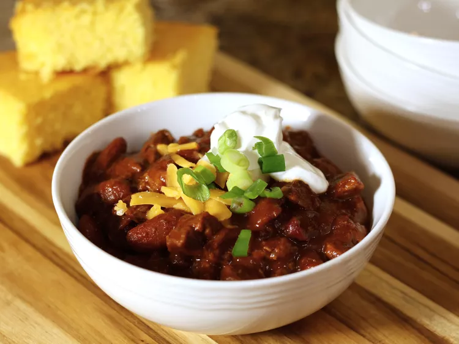

Home
Chris's Chili Recipe
This Coca-Cola chili is my recipe, and it has won over 12 chili cook-offs, so I figured I'd share. It is a medium steak and bean chili similar to Steak N' Shake's chili — but better. It is somewhat involved, but trust me, it is worth every minute. Try it; you will not be disappointed.

Ingredients
- ¼ cup bacon grease (see notes)
- 1 ½ pounds boneless beef round steak, cut into 1/3-inch cubes
- 1 ½ pounds beef sirloin steak, cut into 1/3-inch cubes
- 1 ½ cups onion soup, prepared from a packet of dry onion soup mix
- 3 (15 ounce) cans kidney beans, undrained
- 1 (8 ounce) can tomato sauce
- 1 (6 ounce) can tomato paste
- 1 tablespoon chili powder
- 2 teaspoons ground cumin
- 1 teaspoon salt
- ½ teaspoon ground black pepper
- 1 cup cola soft drink (such as Coke®)
- 1 tablespoon yellow sport pepper sauce (such as Texas Petes's®)
- 2 teaspoons unsweetened cocoa powder
Directions
- Place bacon grease into a large stainless steel soup pot over medium-high heat. Cook and stir cubed round and sirloin steak meat in hot bacon grease until well browned, about 10 minutes. Pour in onion soup and bring to a boil. Reduce to a simmer and cook for 7 minutes, stirring to dissolve any browned flavor bits from the bottom of the pot.
- Stir in kidney beans, tomato sauce, tomato paste, chili powder, cumin, salt, and pepper. Bring to a boil, stirring frequently to avoid burning the bottom. Cover, reduce heat to low, and simmer for 1 hour, stirring occasionally.
- Stir in cola, pepper sauce, and cocoa. Simmer until flavors blend, about 20 more minutes. Serve hot.